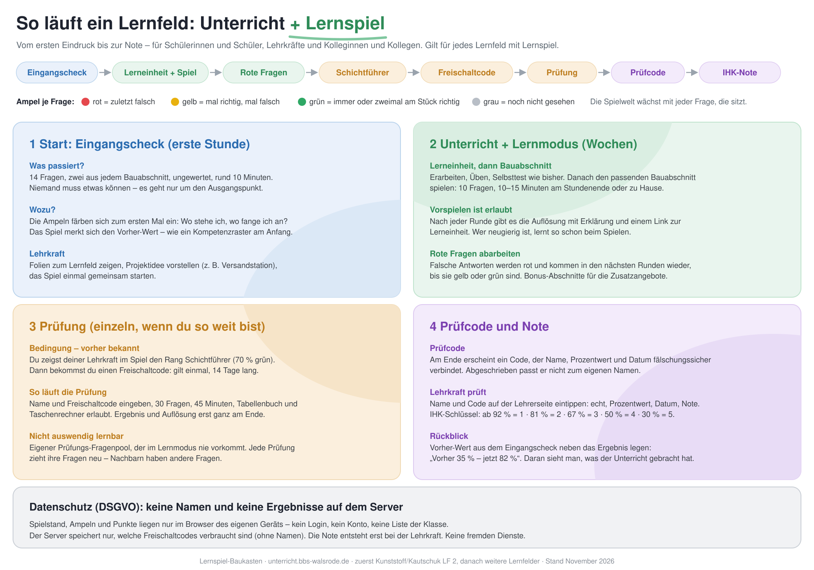

So läuft ein Lernfeld mit dem Lernspiel
Mein Ablauf für Lernfelder mit Lernspiel – zuerst Kunststoff/Kautschuk LF 2 („Bau die Versandstation“), später weitere Lernfelder. Zum Erklären für die Klasse am Beamer oder ausgedruckt.

Für den Unterricht
Bild antippen öffnet es groß. Zum Ausdrucken gibt es dieselbe Grafik als PNG.

Kurz zum Mitsprechen
Erste Stunde: Eingangscheck im Spiel, ungewertet – zeigt den Ausgangspunkt.
Während des Lernfelds: nach jeder Lerneinheit den passenden Bauabschnitt spielen; Vorspielen ist erlaubt.
Prüfung: wer mir den Rang Schichtführer zeigt, bekommt einen Freischaltcode (einmalig, 14 Tage). 30 Fragen, 45 Minuten, eigener Fragenpool.
Note: Name und Prüfcode zeigen, ich prüfe ihn auf der Lehrerseite – IHK-Schlüssel.
Datenschutz: keine Namen und keine Ergebnisse auf dem Schulserver.